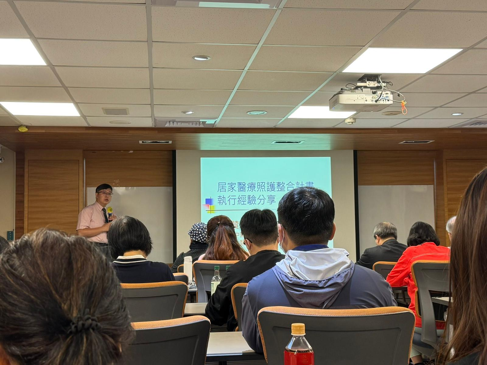
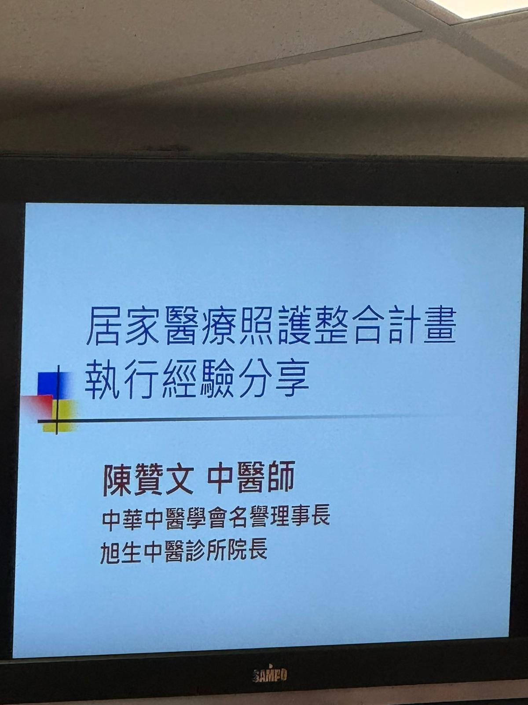
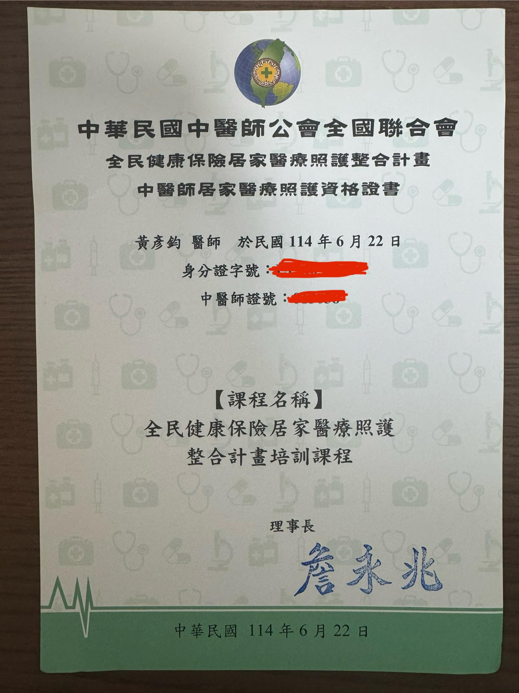

居家醫療照護整合計劃 - 台北市中醫師公會、全聯會聯合訓練課程
居家醫療照護整合計劃 - 台北市中醫師公會、全聯會聯合訓練課程
未來的5-10年內，台灣醫療型態應該會有很大的轉變，隨著醫療量能的崩壞，加上老年化社會的來臨，長照、居家與機構醫療的需求一定會越來越顯著。
今日受訓的過程，許多台上的前輩們都異口同聲表示，走入社區、住家或機構，所見的疾病光譜與患者狀態跟在坐診間看診會是完全不一樣的風景！
面對眼前帶著疾病的「人」及其住處環境、生活習慣、家庭社會支持等面向，會有更全面、深層的視角，來去思考怎麼樣的醫療處置才是最「適合」的，而不單單只是考慮「應該/不應該」、「對/錯」。
中醫師們的處置方式與日常診間差不多，但卻主動把醫療帶進居家日常，甚至是中西醫與護理師組成完整的醫療團隊進駐，這也是醫療的另一個需要被重視的面向！
只是考慮到成本、人力與目前的配套，確實還有需要努力之處，不過這樣的願景，確實是很需要大家一起努力的！
已經有許多中西醫師、護理師，組成團隊，在照護許多年長者，影片的紀錄與過程的分享令人動容，真的非常不容易！
希望未來有一天因緣條件各方面俱足，能在這個領域裡盡一點微薄的力量！
太初中醫診所
中醫師 黃彥鈞


